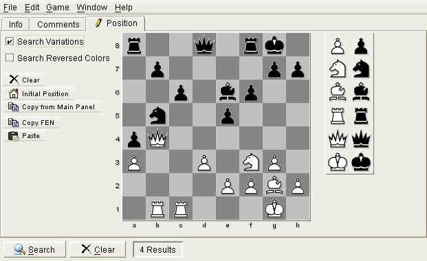

|
|
jose 1.4.1 |
|
Use this panel to search the database. Enter some conditions, then hit the Search button.
Use The Database Overview Panel to restrict the search to specific folders.
If no folder is selected, jose will search the complete database.
Use the Clear button to clear all search conditions.
The number of found results will be displayed on the right.
Use the "Stop" button to abort a lengthy search operation.
Lets you search for general game information:

Enter the white player's name.
Enter the black player's name.
If Color Sensitive is checked, white and black player's name must exactly match the colors.
If Color Sensitive is not checked, the search will also return games with reversed colors. For example, searching for "Kasparov" and "Karpov" would return all games "Kasparov-Karpov", plus all games "Karpov-Kasparov".
Enter the event name
Enter the game site
Enter the opening name
Enter an ECO opening code, or a range of ECO codes:
Enter the numer of moves played in the game, or a range:
Enter a date, or a range of dates.
Select the results that you are searching for.
If Color Sensitive is not checked, results need not match the color.
For example, if you want to search for all games that Kasparov has won with white or with black, enter "Kasparov", check "1-0" and do not check Color Sensitive .
If Color Sensitive is checked, searches would only return the games that are won by Kasparov playing white.
Select this option to find only games that match the exact colors. If this option is not selected, games with any colors will be found.
Please not that this option applies to the Result options also.
Examples:
Swap white and black player's names.
When searching for names, match upper and lower case characters exactly. By default, text searches are not case sensitive.
Search for names that sound similar. This might be useful if you don't know the exact spelling of a name (see below).
When you search for a text column (e.g. a player's name) you need not specify the exact text. It is sufficient to enter a prefix:
KaspaUse wildcard ? for a single character, or * for several:
be aware, however, that a leading * ("*Genrikh*") can slow down searches considerably.
Searching is not case sensitive, unless you check the Case Sensitive checkbox.
kAsPaRoVIf you check Sounds Like , you can search for different spellings. It will find all names that sound similar:
sherepgof This option is useful for searching different transcriptions of Russian names. It is, however, not fool proof. For example, Mr. Korchnoi is transcribed "Kortschnoi" in German, which can not be found with a "sounds like" search.

If checked, search only for games that have comments.
If checked, search only for games that have variations.
Search for the annotator's name.
Search the comment text.

Lets you search for games that contain a certain position.
Use the board to set up the position.
If checked, search not only the main line, but also variation lines.
If checked, search for similar positions with reversed colors.
Clears the board and disables position searching.
Set up the initial position.
Copy the position from The Board Panel
Copy the current position to the system clipboard, as a FEN string.
FEN is a common format for chess positions that is understood by many chess applications.
For example, a FEN string might look like this:
r2q1rk1/1p4pp/2p1bp2/1n2p3/pQ6/P2P1NP1/4PPBP/1RR3K1 b - - 0 22
Paste a FEN position from the system clipboard.
You should take care that the system clipboard contains a valid FEN string, otherwise it will not produce a useful result.
Please note that positional searches are considerably slower than other types of searches. With large databases, you should try to constrain the search conditions as much as possible.
For example, if you are searching for a position from the "Spanish" Opening, you could enter its ECO code "C66" as an additional search constraint. Performing a positional search only on the "C66" games is quite a bit faster than searching the whole database.
|
|
© 2002-2006 jose-chess.sourceforge.net |
|